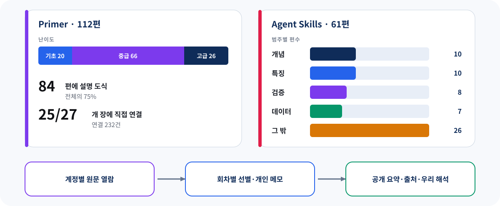

Machine Learning for Trading
3판을 읽는 지도
교재와 공식 학습 생태계를 먼저 살펴보고,
우리 스터디에 맞는 진행 경로와 결정할 질문을 비교한다
0. 다음 교재는 ‘모델 모음’보다 연구 시스템에 가깝다
이 책의 가장 큰 특징은 특정 알고리즘을 잘 쓰는 법에서 멈추지 않는다는 점이다. 같은 모델이라도 어떤 시점의 데이터를 썼는지, 라벨과 검증 구간을 어떻게 정했는지, 거래비용 뒤에도 신호가 남는지, 반복 가능한 운영 절차가 있는지를 연결해 묻는다. 3판은 전통적인 표 형식·시계열 모델에 더해 인과 ML, 강화학습, 금융 RAG, 지식 그래프, 에이전트와 MLOps까지 범위를 넓혔다.
| 축 | 책이 제공하는 것 | 스터디에서 얻을 수 있는 것 |
|---|---|---|
| 연구 과정 | 질문·데이터·검증·전략·운영의 연결 | 각 장의 기법을 전체 파이프라인 안에서 설명 |
| 실행 자산 | 공식 노트북·라이브러리·사례 | 설명에서 재현 가능한 증거로 이동 |
| 최신 주제 | 인과 ML·RL·RAG·KG·Agent·MLOps | 전통 퀀트와 생성형 AI의 접점을 비교 |
| 학습 설계 | 112 프라이머와 61 스킬 | 모르는 개념을 필요한 순간에 보충 |
공식 개요와 수치: ml4trading.io 및 2026-08-30에 고정한 로컬 공식 자료 스냅샷. 수치는 공개 목록과 로컬 파일을 구분해 표기했다.
1. 책 한 권이 아니라 여섯 층의 학습 생태계
- 책은 논리를, 공식 코드는 구현 폭을, 사례는 연결성을 제공한다.
- 프라이머는 선수 지식 격차를 메우고, 라이브러리·스킬은 재사용과 자동화를 보여준다.
- 모든 층을 같은 깊이로 공부하지 말고 회차 목적에 맞춰 조합해야 한다.
 수치는 로컬 공식 코드 스냅샷과 2026-08-30 공식 사이트 기준. 공식 사이트는 노트북 수를 446+로 표기하며, 로컬 스냅샷의 전체 ipynb 실측은 468개다.
수치는 로컬 공식 코드 스냅샷과 2026-08-30 공식 사이트 기준. 공식 사이트는 노트북 수를 446+로 표기하며, 로컬 스냅샷의 전체 ipynb 실측은 468개다.| 자료 | 우리에게 필요한 역할 | 회차당 기본 | 주의 |
|---|---|---|---|
| 교재 마크다운·한국어 해설 | 그날 한 장의 논리 정본 | 해당 장 1개 | 원문·해설·발표자 해석 구분 |
| Ch1–27 가이드 노트북 | 가벼운 재현 가능한 입구 | 해당 장 1개 | 공식 예제 전체를 대체하지 않음 |
| 공식 노트북·Python | 구현 패턴과 확장 실험 | 선택 앵커 0~1개 | API 키·유료 데이터·GPU·시간 비용 |
| 9개 종단 사례 | 현재 장의 판단을 실제 흐름에 연결 | 필요한 조각만 | 전 회차 공통 과제로 강제하지 않음 |
| 112 프라이머 | 선수지식·막힌 개념 보충 | 스킬과 합계 0~1편 | 각자 계정으로 열람, 공개물에는 요약·출처만 |
| 61 에이전트 스킬 | 발표자가 쓸 검증 질문 | 프라이머와 합계 0~1편 | 별도 역할이나 진도표로 만들지 않음 |
공식 개요: ml4trading.io · 27장 구성 · 사례 · 프라이머 · 라이브러리
2. 27장은 하나의 검증 루프로 읽어야 한다
장 순서는 데이터→특징→모델→전략→고급 AI→운영으로 움직인다. 이 흐름은 매주 새로운 주제로 갈아타는 목차가 아니라, 앞 단계의 선택이 다음 단계에서 어떻게 검증되고 다시 수정되는지를 보여주는 연구 루프다.
 AIML Quant 재구성. 운영에서 얻은 증거가 앞 단계의 질문·데이터·가정을 다시 수정한다는 방향으로 읽는다.
AIML Quant 재구성. 운영에서 얻은 증거가 앞 단계의 질문·데이터·가정을 다시 수정한다는 방향으로 읽는다. 27개 장 디렉터리 안의 ipynb 281개 실측. 나머지는 사례·공용 도구·라이브러리 등에 분포한다. 노트북 수는 난이도가 아니라 선택 부담의 크기를 보여준다.
27개 장 디렉터리 안의 ipynb 281개 실측. 나머지는 사례·공용 도구·라이브러리 등에 분포한다. 노트북 수는 난이도가 아니라 선택 부담의 크기를 보여준다.| 파트 | 핵심 질문 | 통합 산출물 | 다음 단계 통과 기준 |
|---|---|---|---|
| Ch1–5 기초·데이터 | 무엇을 언제 알 수 있었나? | 데이터 계약 | 생존·미래정보 누수 점검 |
| Ch6–10 특징 | 예측 시점에 계산 가능한가? | 특징·레이블·split 명세 | purging/embargo와 기준선 |
| Ch11–15 모델 | 단순 기준선보다 안정적인가? | 모델 카드와 OOS 비교 | 튜닝 누수·비용 전 수익 |
| Ch16–20 전략 | 비용·위험까지 살아남나? | 백테스트·포트폴리오 규칙 | 비용·용량·stress test |
| Ch21–24 고급 AI | 복잡성이 추가 가치를 주나? | RL·RAG·KG·Agent 제한 실험 | 실패 경계·도구 권한·평가 |
| Ch25–27 운영 | 반복·감시·중단 가능한가? | paper-trading 운영 런북 | 재현성·drift·rollback |
3. 이 책은 우리가 이미 만든 공부 방식과 잘 맞는다
지금까지 우리는 한 장의 한국어 해설판과 실행형 주피터 노트북을 만들고, 이를 상세 HTML 리포트와 발표자료로 압축한 뒤 발표와 영상을 남겨 왔다. ML4T 3판은 책·코드·사례·보충 읽기가 장별로 연결되어 있어 이 품질 사슬을 그대로 활용할 수 있다. 새로 필요한 것은 더 많은 산출물이 아니라, 방대한 공식 자료에서 그날의 핵심 증거를 고르는 기준이다.
| 현재 자산 | ML4T 3판에서 연결할 것 | 그날 남길 결과 |
|---|---|---|
| 장별 한국어 해설 | 교재 논리·용어·가정 | 원문·해설·발표자 판단의 경계 |
| 가이드 주피터 노트북 | 해당 장의 경량 재현 | 실행 결과와 실패 조건 |
| 상세 HTML 리포트 | 공식 코드·사례·프라이머 근거 | 다음 사람이 다시 읽을 분석 기록 |
| 발표자료·YouTube | 핵심 판단과 도식 | 질문·반론·다음 장 연결 |
이 교재의 장점은 ‘기법을 많이 아는 것’보다 연구 판단을 증거와 함께 설명하고, 다음 단계에서 다시 검증하는 습관을 만들 수 있다는 데 있다.
다만 공식 노트북 468편과 계정 자료 173편을 모두 진도로 만들면 책의 연결 구조가 오히려 흐려진다. 따라서 공통선은 교재·해설·가이드 노트북으로 두고, 공식 코드와 사례·프라이머·스킬은 현재 장의 질문을 가장 잘 드러내는 것만 선택하는 편이 적합하다.
4. 세 가지 진행 경로를 같은 기준으로 비교한다
모든 안은 장별 맥락을 보존하고, 지금까지의 해설·노트북·리포트·발표 흐름을 이어 간다. 차이는 ‘얼마나 많은 장을 공통 발표 진도로 삼을 것인가’와 ‘어떤 질문을 과정의 중심에 둘 것인가’다.
 모든 경로는 발표 회차마다 한 장을 중심으로 구성한다. 숫자는 오리엔테이션과 마무리 논의를 포함한 초안이며, 선택 장은 회의에서 확정한다.
모든 경로는 발표 회차마다 한 장을 중심으로 구성한다. 숫자는 오리엔테이션과 마무리 논의를 포함한 초안이며, 선택 장은 회의에서 확정한다.| 경로 | 구성 | 강점 | 주의할 점 | 잘 맞는 목표 |
|---|---|---|---|---|
| A · 전권 순차형 | 시작 1 + 장별 27 + 회고 1 = 29회 | 빠지는 장 없이 책의 설계를 그대로 경험 | 가장 긴 일정과 꾸준한 발표 배정 필요 | 교재 전체를 공통 언어로 만들기 |
| B · 핵심선택형 | 시작 1 + 핵심 20장 + 회고 1 = 22회 | 데이터→모델→전략→운영의 뼈대와 최신 주제 균형 | 선택하지 않은 7장의 취급 원칙 필요 | 깊이와 기간의 균형 |
| C · 전략구축형 | 시작 1 + 연결 장 14개 + 회고 1 = 16회 | 하나의 연구 질문을 끝까지 추적 | 교재 전반을 훑는 폭은 줄어듦 | 실행 가능한 연구 흐름 완성 |
4.1 선택은 ‘회차 수’보다 학습 목적에서 시작한다
| 구간 | A · 전권 | B · 핵심 | C · 전략 구축 |
|---|---|---|---|
| 기초·데이터 Ch1–5 | 5장 모두 | 데이터 계약과 시점성 중심 | 공통 연구 질문에 필요한 장 |
| 특징·모델 Ch6–15 | 10장 모두 | 학습 과제·파이프라인·기준선 중심 | 선택 전략의 신호와 모델 장 |
| 전략 Ch16–20 | 5장 모두 | 시뮬레이션·비용·위험은 우선 포함 | 전략 실행의 척추로 포함 |
| 고급 AI Ch21–24 | 4장 모두 | 관심 주제 2~3장 선택 | 연구 질문과 직접 연결되는 장만 |
| 운영 Ch25–27 | 3장 모두 | 재현·감시·중단 관점 포함 | 마지막 검증과 운영으로 연결 |
회의의 출발점으로는 B · 핵심선택형이 적당하다. 책의 전체 루프를 유지하면서도, 관심이 낮거나 다른 장과 중복되는 부분을 선택 읽기로 돌릴 수 있다. 다만 “모두 함께 같은 책을 완주했다”는 가치가 더 크다면 A를 고른다.
5. 진행 경로가 달라도 한 회차의 익숙한 리듬은 유지한다
 기존 AIML Quant 발표 흐름을 그대로 쓴다. 공식 자료는 발표자가 설명할 수 있는 한 개의 핵심 증거를 중심으로 선택한다.
기존 AIML Quant 발표 흐름을 그대로 쓴다. 공식 자료는 발표자가 설명할 수 있는 한 개의 핵심 증거를 중심으로 선택한다.5.1 발표는 ‘장의 줄거리’보다 하나의 판단을 닫는다
| 묶음 | 답할 질문 | 권장 자산 |
|---|---|---|
| 맥락 | 이 장은 전체 연구 루프의 어디인가? | 교재·한국어 해설 |
| 논리 | 핵심 가정과 판단 기준은 무엇인가? | 상세 리포트·직접 작도 도식 |
| 증거 | 어떤 실행 결과가 주장을 지지하거나 반박하는가? | 가이드 노트북 + 공식 앵커 0~1개 |
| 경계 | 실패 조건과 다음 장으로 넘길 질문은 무엇인가? | 사례·프라이머·스킬 중 필요한 자료 |
5.2 기존 60분 발표 흐름에 자연스럽게 맞춘다
| 구간 | 내용 | 완료 신호 |
|---|---|---|
| 0–5분 | 이전 장과 오늘 질문 | 연구 루프에서 위치가 보임 |
| 5–25분 | 장의 핵심 논리와 가정 | 무엇을 판단하는지 설명 가능 |
| 25–45분 | 노트북·공식 코드·사례의 핵심 증거 | 결과와 한계가 함께 보임 |
| 45–55분 | 누수·비용·불안정성·적용 경계 | 반박 가능한 문장이 남음 |
| 55–60분 | 질문과 다음 장 인계 | 다음 발표자가 받을 질문 1개 |
이 리듬은 새로운 역할을 늘리지 않는다. 그날 발표자가 준비부터 설명과 질의까지 하나의 맥락으로 잇고, 참석자는 질문과 반론으로 참여한다. 내용이 많은 장은 여러 장을 묶기보다 공식 자료의 선택 깊이를 줄여 중심 질문을 선명하게 만든다.
6. ‘다 돌리기’ 대신 선택·고정·감사한다
로컬 자료에는 Ch1–27 가이드 노트북, 공식 코드와 사전 계산된 사례 산출물이 준비되어 있다. 하지만 외부 API 키, 라이선스 데이터, GPU, 긴 실행 시간이 필요한 예제가 섞여 있고 특정 네트워크에서는 접근 제약도 확인됐다. 실행 범위는 개인의 의욕이 아니라 공통 재현 계약으로 통제해야 한다.
| 단계 | 무엇을 실행하나 | 언제 쓰나 | 완료 조건 |
|---|---|---|---|
| L1 · Guide | 해당 장의 로컬 가이드 노트북 | 모든 장의 기본선 | 주요 셀 실행과 출처 일치 |
| L2 · Anchor | 공식 노트북 1개 또는 작은 부분 | 60분 안에 메커니즘을 더 보여줄 때 | 고정 입력·버전·시간·출력 |
| L3 · Case | 사례의 현재 장 관련 산출물 | 장 설명에 실제 연결이 필요할 때만 | 한 장의 질문을 넘지 않음 |
6.1 ETF 사례는 공통 의무가 아니라 선택 가능한 연결 자료다
- 공식 릴리스가 입문용으로 먼저 제시하고, 사전 계산 번들이 약 33MB로 작다.
- 데이터→특징→예측→포트폴리오→백테스트 흐름을 보여 줄 수 있지만, 매회 누적 프로젝트를 강제하지 않는다.
- 발표자는 그날 한 장을 이해시키는 데 실제 도움이 될 때만 ETF 사례의 한 조각을 사용한다.
공식 코드·산출물: GitHub 저장소 · Releases. 참가자용 로컬 정리: 자료 안내.
7. 계정 자료는 ‘두 번째 교재’가 아니라 회차별 보충층으로 쓴다
2026-08-30에 참가자 계정으로 프라이머 112편과 에이전트 스킬 61편을 전수 확인했다. 응답·본문·해시·도식 참조를 감사한 결과 누락은 없었고, 프라이머 84편의 설명 도식 84개도 정상 열렸다. 그러나 이용 약관은 저작권과 재배포 제한을 명시한다. 따라서 원문은 각자의 계정에서 읽고, 스터디 공개 자산에는 직접 복제 대신 출처가 있는 요약·우리의 실험·해석 경계만 남긴다.

읽는 법 — 왼쪽은 프라이머의 난이도·장 연결, 오른쪽은 스킬 범주 분포다. 아래 흐름은 접근과 공개의 경계다. 수치는 2026-08-30 계정 전용 페이지의 로컬 감사 결과이며 원문·원본 도식을 공개 저장소로 복제하지 않았다.| 자료 | 어디에 쓰나 | 권장 사용법 | 상태·주의 |
|---|---|---|---|
| 공식 Guided Tour | 전체 온보딩 | 첫 회차 전 구조 질문 1개 | 공식 홈페이지 연결 영상 |
| Idea→Validated Strategy | Ch1 또는 회고 | 단계와 우리 산출물 대응 | 저자의 무료 공식 레슨 |
| 112 Primers | 선수·보충 | 막힌 개념이 있을 때 0~1편 | 20 기초·66 중급·26 고급; 개인 계정 열람 |
| DATAcated 인터뷰 | 역사·저자 관점 | 2판과 3판 변화 토론 | 2021년, 현재 3판 안내 아님 |
| Packt 저자 세션 | 초기 문제의식 | 선택 시청 후 현재 구조와 비교 | 2021년 2판 시대 자료 |
| 61 Agent Skills | 발표자 검증 질문·Ch24 | 필요한 체크리스트 0~1편 | 별도 역할이나 진도표로 만들지 않음 |
7.1 읽기 예산은 한 발표자의 60분 준비를 넘지 않게 한다
프라이머는 25개 장에 232번 연결된다. 특히 Ch9 모델 기반 특징 29편, Ch17 포트폴리오 구성 21편, Ch14 잠재요인 19편에 집중된다. 연결된 글을 과제로 묶으면 한 장 제한이 형식만 남는다. 발표자는 막힌 개념이 있을 때 프라이머 또는 스킬을 최대 한 편 고르고, 나머지는 질문이 생겼을 때 찾는 색인으로 둔다.
7.2 프라이머·스킬 운영 규칙
- 프라이머 112편을 전수 번역 과제로 만들지 않는다. 장의 논리를 설명하는 데 꼭 필요할 때만 0~1편을 고른다.
- 에이전트 스킬은 별도 진도표나 별도 담당 역할로 만들지 않는다. 그날 발표자가 검증 질문을 찾는 참고 자료로만 쓴다.
- 계정 원문과 원본 도식은 개인 열람 범위에 둔다. 공개 리포트에는 요약·참고문헌·직접 만든 도식·재현 결과만 싣고, 원문·공식 요약·우리 해석을 구분한다.
- 로그인이나 외부 서비스가 막혀도 회차가 멈추지 않도록 교재 해설과 해당 장의 가이드 노트북을 최소 공통선으로 유지한다.
8. 교재를 이해한 뒤, 다섯 가지를 함께 정한다
논의의 목적은 미리 정한 한 안을 승인하는 것이 아니다. 이 책에서 무엇을 얻고 싶은지 확인하고, 그 목표에 가장 잘 맞는 경로와 운영값을 고르는 것이다.
| 기준 | 회의에서 물을 질문 | 판단 자료 |
|---|---|---|
| 학습 목표 | 전권 공통 언어, 기간 균형, 전략 완성 중 무엇이 우선인가? | A/B/C 경로 |
| 장 선택 | 고급 AI와 운영 장을 어느 깊이까지 공통 진도로 둘까? | 27장 지식 지도 |
| 실행 깊이 | 설명·부분 재현·실험 중 어느 수준을 기본으로 둘까? | L1–L3 계약 |
| 자료 선택 | 공식 코드·사례·프라이머를 어떤 때 붙일까? | 회차별 자료 예산 |
| 운영 리듬 | 개최 빈도와 첫 점검 시점을 어떻게 둘까? | 기존 발표 흐름 |
8.1 60분 논의 진행안
| 시간 | 논의 | 남길 결과 |
|---|---|---|
| 0–12분 | 교재의 범위와 학습 가치 확인 | 이 책에서 얻고 싶은 것 1~2개 |
| 12–25분 | A/B/C 경로 비교 | 우선 경로와 예비 경로 |
| 25–38분 | 공통 진도에 넣을 장의 원칙 | 필수·선택·보류 기준 |
| 38–50분 | 실행 깊이와 보충자료 사용 | 가이드·앵커·프라이머 기준 |
| 50–60분 | 첫 회차와 점검 시점 | 첫 담당·빈도·재논의 날짜 |
8.2 회의가 끝날 때 남길 문장
결정 뒤에는 첫 네 회차만 구체적으로 배정하고, 전체 달력은 선택 경로의 장 목록이 확정된 뒤 등록한다. 이렇게 하면 책의 학습 목적을 먼저 고정하면서도 실제 진행 경험을 다음 운영 결정에 반영할 수 있다.
참고 자료와 분석 경계
- 공식 개요·장 지도 — ML4T 3e, Chapters, 확인 2026-08-30.
- 공식 코드·릴리스 — Repository, precomputed artifacts.
- 공식 학습 보조 — Primer, Case Studies, Libraries, Skills.
- 이용 경계 — Terms of Use, robots.txt. 계정 전용 173개 페이지는 개인 학습·정확성 검증에만 사용하고 원문과 원본 도식을 재배포하지 않았다.
- 저자 영상 — Guided Tour, free lesson.
- 내부 근거 — ML4T 3판 로컬 자료·실행 원장, 계정 전용 자료 감사 원장, 2025–2026
workspace/ml4t일정·운영 규칙·회의 기록. 비공개 교재·계정 자료·로컬 경로는 공개 페이지에 직접 노출하지 않았다.
커리큘럼·역할·시간 배분·평가표는 공식 교재의 처방이 아니라 AIML Quant 운영 제안이다. 공식 사이트의 “446+ 노트북”과 로컬 스냅샷의 468개 파일 수는 집계 시점·범위가 달라 함께 표기했다. 계정 자료의 수치도 2026-08-30 캡처 시점의 파생 통계다. 투자 성과를 보장하거나 투자 조언을 제공하지 않는다.